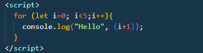
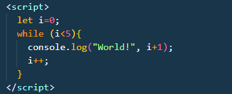
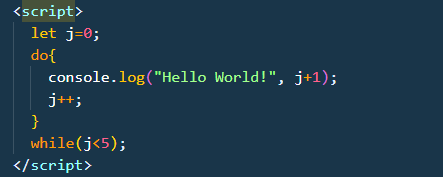

Loops in JavaScript
Loops are control structures in programming that are used to execute a block of code repeatedly as long as a specified condition is true. They are essential for automating repetitive tasks and iterating over collections of data.
There are mainly three types of loops in JavaScript:
- for loop:It repeats a block of code a specified number of times.
- while loop:It repeats a block of code while a specified condition is true.
- do...while loop:It repeats a block of code while a specified condition is true, and it executes the code block at least once before checking the condition.
-
for loop
Syntax: for(initialization; condition; incremenmt/decrement){
//code block to be executed repeatedly
}
Example:

-
while loop:
Syntax:
while (condition){
//code block to be executed repeatedly
}
Example:

-
do...while loop:
Syntax:
do{
//code block to be executed repeatedly
} while (condition);
Example:
